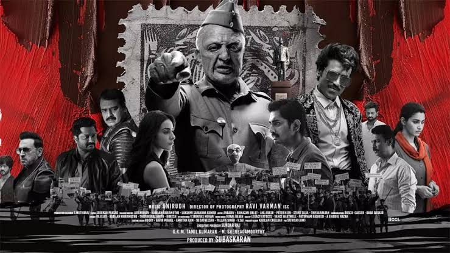

"Indian 2" is a highly anticipated Tamil action thriller directed by Shankar, starring Kamal Haasan in the lead role. A sequel to the 1996 blockbuster "Indian," the film continues the story of Senapathy, a vigilante determined to eradicate corruption from society.
